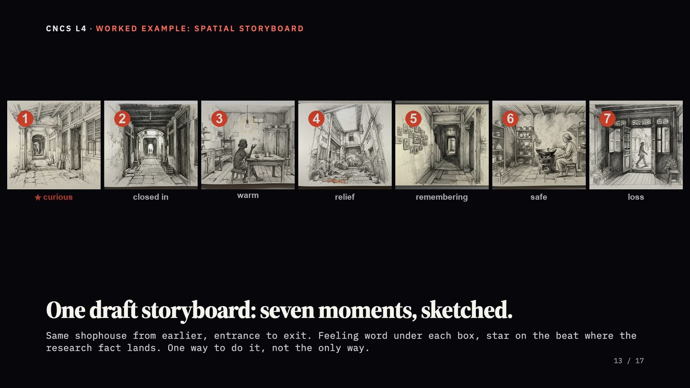
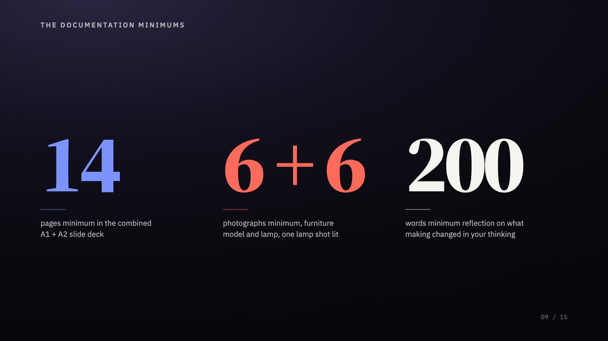
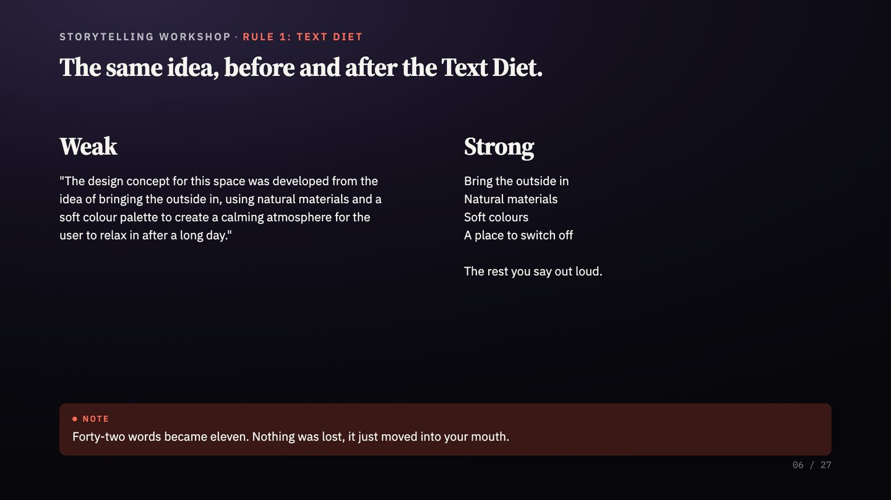

Four subjects on rotation, every week, all semester. Building one lecture by hand took me somewhere between a day and a half and three days, so it happened on weekends and on the days I had no class. When a week got tight, the fallback was to reuse last semester's deck. That meant carrying forward information I already knew was dated, and ignoring everything the last cohort had taught me. I did not want a faster way to make slides. I wanted to stop teaching last year's lecture.
The problem was never the hours
A design curriculum dates quickly. New tools arrive, new work gets published, and the reference that landed well two years ago stops landing. Every cohort also teaches you something. You watch where they stall, you hear the question three students ask in a row, and you know exactly what you would change next time.
The problem is that acting on any of it costs a day you do not have. So the changes get deferred, and deferred again, and the deck you deliver is the deck you delivered last year. That is the real cost, and it is not a scheduling problem. It is a compounding one: content ages, feedback goes unused, and nobody notices until the material is well behind the field it is supposed to describe.
This material is delivered to degree cohorts and assessed by external examiners from a UK partner university. That is not a reason to be careful about deadlines. It is the reason "just get AI to make the slides" was never the answer.
How it works
Seven stages, each with its own written specification. Three of them stop and wait for me.
Research gathers and checks the source material for the week. Outline plans the lecture slide by slide. Images generates or sources every visual and places it. Slides authors the deck against a fixed layout system. Quality control screenshots every slide and checks it against the standard. Export produces the PDF. Handout builds the student-facing document when the week needs one.
The outline is mine
This is the part I want to be precise about, because it is where most accounts of this kind of system are dishonest.
Nothing here is fully automated, and the outline does not come from the machine. I draft it. I decide what gets taught, in what order, and what the students need to leave the room with. The system then reads what I wrote and argues with it. It flags where I have assumed knowledge the cohort does not have, where two ideas are competing for the same slot, and where I have written something a student would nod along to without understanding.
The machine does not decide what gets taught. It automates the repetitive half and argues with the rest. The working rule
What it automates is the part that never needed me: laying out slides, sourcing and placing images, exporting files, and checking every deck against the same standard so the twelfth week looks like the first. The judgment stayed where it was. Three stages stop and wait, and the review is not a formality. Roughly half an hour to an hour on the research and outline, another half hour on the finished deck to check that the voice lands.
It remembers last week
This is the piece that matters most, and it is the one I did not expect to matter at all.
Before the system writes this week's outline, it reads last week's finished deck. It takes the promise made on the closing slide, the line that tells students what is coming next, and uses it to open this week. It matches the layout so the series reads as one course rather than twelve separate lectures. It also reads a running file of what has worked before and the build log for that subject.
Continuity used to depend on me remembering what I said last Thursday. Now it is built in. That sounds small. It is not. Week-to-week drift is how a coherent module quietly turns into a stack of unrelated sessions, and it happens to good teachers with full timetables, not careless ones.
What it produced
17
Lectures produced
4
Subjects
9
Weeks
585
Slides authored
131
Images placed
10
Student handouts
Fastest recorded build, from my outline to an exported deck: under thirty minutes.
Three decks below, from three different subjects. The point is not any single slide. It is that they were produced weeks apart, for unrelated material, and they hold the same visual standard without me maintaining one by hand.



The honest comparison
I built the system before I thought to measure it, so the "before" figure here is reconstructed from memory rather than logged. I am labelling it as an estimate because that is what it is, and the method is below so you can judge it yourself.
By hand, one lecture cost me roughly a day and a half to three days: half a day to two days on research and finding images, a few hours typing the bones straight into PowerPoint with no styling, then half a day on the styling. A lecture I had taught before sat at the shorter end. A lecture built from nothing sat at the longer end, sometimes past it.
Now the same lecture costs me one to one and a half hours of my own time: up to an hour reviewing the research and the outline, and half an hour on the finished deck. That is the comparison worth making, because it is my hours against my hours. The machine's own run time is not the interesting number, and quoting it next to a day and a half of human work would be a trick rather than a measurement.
What I learnt
Do not use AI as a fully agentic worker. Use it as a thought partner.
The version of this system that reads my outline and plays devil's advocate is far more useful than any version that writes the lecture for me. It reads the same material three ways: as a practitioner, as an academic, and as a student. The third one is the one that changed my teaching.
Lecturers are guilty of using complicated words and complicated ideas to explain simple concepts. I have done it. The student does not follow, and then at the end of the semester we sit in a meeting and say this batch is weaker than the last one. Reading about Feynman's technique1 changed how I write a lecture. Explain it the way you would explain it to a five year old. Comprehension went up. Nothing else about the class changed.
What I would do differently
Two things.
Instrument it from day one. I built the system first and started measuring it afterwards, which is why the numbers above are honest but reconstructed. Logging the start and end of every build costs one line and would have given me real data across the whole period instead of an estimate.
Keep the in-class notes properly. The most valuable input to next week's lecture is what I noticed during this week's. Where the room went quiet, which example landed, the question three students asked in a row. I have those observations scattered across notebooks and message threads. Compiled properly, they would feed straight into the build, and the system would be improving the teaching rather than only producing the material.
The same problem, different subject matter
A training department has this problem too. Content that dates, a library nobody has time to refresh, and no cheap way to keep a programme coherent from one module to the next. The subject matter is different. The production problem is identical, and so is the answer: automate the repetitive half, keep the judgment with the person who has it, and build the memory into the process rather than leaving it in someone's head.
Notes
- The Feynman technique is a method for testing whether you actually understand something: explain it in plain language, as if to a child, without jargon. Wherever the explanation breaks down is where your own understanding is thin. Named after the physicist Richard Feynman. ↩